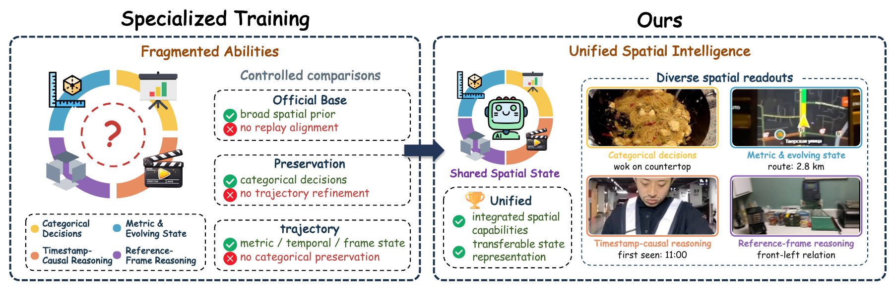
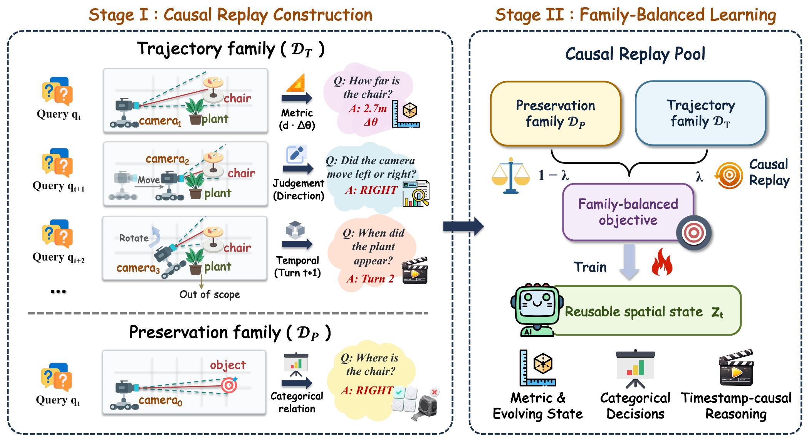
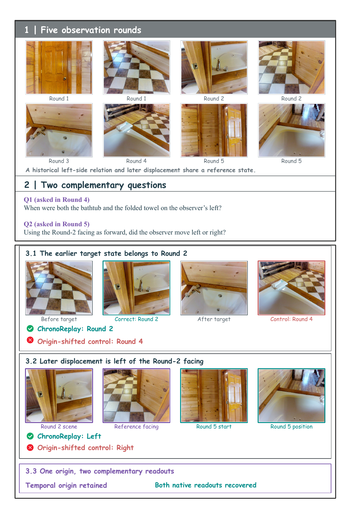

Causal replay construction
Retain categorical options, metric values, and temporal targets in their source-native formats. Replay trajectory turns in chronological order, with each target tied to its observation boundary.
Streaming spatial intelligence · 2026
One Answer Interface Is Not Enough
for Streaming Spatial Intelligence
1Westlake University2ZJU3USTC4SMU5FDU6ECNU7SJTU
One observation history. Categorical, metric, and temporal answers.
Learn complementary spatial abilities through chronological replay.

OST-Bench over the official base
Improved under matched observation access
Sequences in the causal replay pool
Knowing which side an object lies on does not necessarily preserve how far away it is, or when it first appeared.
Training on one answer interface can concentrate improvements on that interface while transfer to others remains weak. We call this observed specialization interface lock-in. ChronoReplay combines heterogeneous supervision in chronological episodes, keeps source-native targets, and balances their contribution to learning.
A single Qwen3-VL-8B checkpoint improves across OVO-S-Bench, OST-Bench, and UCS-Bench under the same observation access. Adaptive frame selection provides a separate inference-time gain with the trained model held fixed.
Two stages turn complementary spatial supervision into one autoregressive training objective.

Retain categorical options, metric values, and temporal targets in their source-native formats. Replay trajectory turns in chronological order, with each target tied to its observation boundary.
Normalize the preservation and trajectory losses, then balance their contribution to shared parameters. The language model and visual merger are trained; the visual encoder stays frozen.
Matched comparisons isolate the effects of training. Adaptive observation access is measured separately.
Official Qwen3-VL-8B versus ChronoReplay. OVO-S uses Uniform-128; OST and UCS follow their fixed causal evaluation protocols. Higher is better.
| Model | OVO-S ↑ | OST ↑ | UCS ↑ |
|---|---|---|---|
| Official Qwen3-VL-8B | 48.98 | 50.52 | 45.33 |
| ChronoReplay | 53.89 | 63.93 | 52.77 |
Author-reported results from the paper; this release does not bundle saved predictions. See protocols and full tables ↗
+2.41 OST points
Chronological replay exceeds shifted-order replay across two paired seeds (64.22 versus 61.81 mean OST score), with the same turn content.
37.11% fewer frames
Adaptive access uses 80.50 frames on average versus Uniform-128 and improves OVO-S from 53.89 to 57.98 for the same checkpoint.
Spatial answers depend on the history that defines them. This OST-Bench episode pairs metric and temporal questions with the same causal observation sequence.
Qualitative example reproduced from the paper. Full examples and limitations are included in the manuscript.
Explore the paper
Implementation, configurations, tests, and a frozen training-selection manifest are available in the repository.
Environment setup and model requirements.
02Native records, selection manifests, and source access.
03The replay recipe and controlled comparisons.
04Inference and scoring for all three benchmarks.
The CPU smoke test generates synthetic images and native records, checks media decoding, and builds a weighted Parquet pool.
Fine-tuned weights, benchmark media, and saved predictions are not included. See the data guide for available manifests and source-specific requirements.
git clone https://github.com/yihaohu0118/ChronoReplay.git
cd ChronoReplay
python3.11 -m venv .venv
source .venv/bin/activate
python -m pip install -r requirements.txt
python -m scripts.smoke_test --output outputs/cpu-demoLinux / macOS · For GPU setup, follow the installation guide.
If you use the implementation or build on this work, please cite our paper.
@misc{hu2026chronoreplay,
title={ChronoReplay: One Answer Interface Is Not Enough
for Streaming Spatial Intelligence},
author={Yihao Hu and Yitong Lin and Pan Wang and
Zhihao Wen and Hang Wang and Yiwen Zhao and
Deyuan Liu and Yutong Li and Mingda WAN and
Yuchen Mao and Tao Lin},
year={2026},
url={https://yihaohu0118.github.io/ChronoReplay/}
}